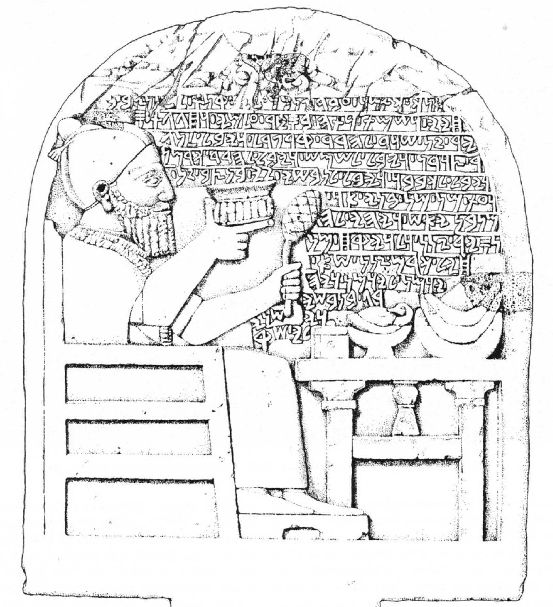

מִכְבָּר mikbār – grating
Semantic Fields:
Utensils
Author(s):
M.D. Koster
First published: 2014-06-20
Last update: 2025-10-5 (Paul Sanders)
Citation: M.D. Koster, מִכְבָּר mikbār – grating,
Semantics of Ancient Hebrew Database (sahd-online.com), 2014 (update: 2025)
(WORK IN PROGRESS)
Introduction
Grammatical type: noun masc.
Occurrences: 6x HB (6/0/0); 0x Sir; 2x Qum; 0x Inscr. (Total: 8)
- Torah: Exod 27:4; 35:16; 38:4, 5, 30; 39:39;
- Qumran: 4Q365 (4QRPc) fr12a-b.ii:11; 11Q19 (11QTemplea) iii:15; see Exegesis 6.1 A.7.
A.1 In Exod 27:4b (and again inv. 5b) possibly הַמִּכְבַּר should be read instead of הָרֶשֶׁת in agreement with the parallel Exod 38:5 (הַנְּחֹשֶׁת לְמִכְבַּר), and with LXX and Pesh (see Ancient Versions).
1. Root and Comparative Material
A.1 Root: מִכְבָּר is evidently a miqtal form of √kbr. This root can have various meanings in the Semitic languages1 but the two basic meanings are ‘to be many’ (Syriac) and ‘to braid, plait’, also ‘to sieve’. Nouns of the miqtal type often designate utensils.2 Since מִכְבָּר seems to be more or less comparable to רֶשֶׁת ‘net’, only cognates that come close to this semantic field are cited below.
A.2 Egyptian: A somewhat exotic proposal was presented by Görg: ‘Could it be possible to see within מִכְבָּר the combination of two Egyptian elements, the noun mk ... ‘‘covering’’ and the Egyptian connection bj3 rw-d ‘‘bronze’’?’.3
A.3 Ugaritic: kbrt, ‘sieve’.4
A.4 Biblical Hebrew: כְּבִיר ‘mosquito net’; כְּבָרָה, ‘sieve’. The meaning of מַכְבֵּר in 2 Kgs 8:15 is uncertain, but is mostly described as ‘coarsely-woven cover over a well head’ (cf. מָּסָךְ in 2 Sam 17:19).
A.5 Postbiblical Hebrew: כְּבָרָה ‘Sieb, eig. Flechtwerk von Weiden’5; מַכְבֵּר, ‘Geflecht, Flechtwerk von Weiden’.6
A.6 Ethiopic: Geez kabaro and karabo, ‘woven basket’.7
2. Formal Characteristics
A.1 מִכְבָּר is a miqtal form of √כבר; see
BL 490zε.
3. Syntagmatics
A.1 [Discussion will be added later.]
4. Ancient Versions
a. Septuagint (LXX) and other Greek versions (αʹ, σʹ, θʹ):
- ἐσχάρα, ‘hearth’, or ‘grid or lattice-work forming the base of various structures’:7a Exod 27:4;
(→ אַח), I. 1. ‘hearth, fireplace’; 2. ‘pan of coals, brazier’; II. ‘sacrificial hearth’; III. ‘fire-stick’; IV. 1. ‘platform, stand, basis’; 2. ‘grating’;8 ‘grate, grating’ (Exod 27:4) and ‘hearth, fire-place’ (Prov 26:21);9 La Bible d’Alexandrie, however, translates with ‘foyer’ (hearth) also in Exod 27:4 (bis). In Exod 27:4b, 5a.b LXX also reads ἐσχάρα for MT רֶשֶׁת (vv. 4b, 5b) and כַּרְכֹּב (5a; with αὐτοὺς [scil. δακτυλίους, v. 4] for MT אֹתָהּ11). - παράθεμα, ‘appendage’:14 Exod 38:4 (LXX 38:24).
In the parallel Exod 38:4-5 (= LXX 38:24), however, מִכְבָּר is rendered both times with παράθεμα, ‘appendage’ (hapax leg., it seems);12 ‘sth put alongside sth, an appendage’;13 ‘garniture’ <garniture de foyer = ‘fire-irons’?>;16 ‘a kind of trestle’.16 Here כַּרְכֹּב is rendered πυρείον, [plur.] ‘fire-sticks’; ‘earthen pan’ [Exod. 27:3];17 ‘censer’;18 ‘censer’;19 ‘brasero’ (brazier).20 Omission: 35:16 (LXX 35:17, shortened verse); 38:5, 30. Origineel: Exod 39:39 is entirely lacking in LXX (in LXX the text of Exod 36-40 is much shorter than in MT and its order is different21).
b. Peshitta (Pesh):
- ܒܣܣ (basis < βάσις), ‘base’: Exod 35:16; 38:5;
- ܩܪܩܠ (qarqel), ‘grated cover’:25 Exod 27:4; 38:4, 30; 39:39; craticula;23 ‘a grating’;24 Latin cracli, a vulgar form of clatri, clathri which in turn was borrowed from Greek κλείθρα / κλῆθρα ‘bars, fences’.26
In Exod 27:4b, 5b Pesh also uses ܩܪܩܠ (qarqel) for MT רֶשֶׁת, cf. LXX.
c. Targumim (Tg):
- סְרָדָא, ‘???’: all instances TgO; 1. ‘network, grate’; 2. ‘web with wide meshes, sail, hanging’;27 1. ‘Drahtgeflecht, Drahtsieb’; 2. ‘Gitter’ (Exod 38:4).28
- קנק(י)ל, ‘???’: all instances TgN andTgPsJ; a loan from Greek κιγκλίς ‘lattice, latticed gate’.
- מכבר: all instances TgSmr; so the Heb. word מִכְבָּר is left untranslated.22
d. Vulgate (Vg):
- Exod 27:4; 35:16; 38:4, 30 craticula ‘fine hurdle-work, small giridion’, derived from cratis ‘wicker-work, hurdle’.29 In Exod 27:5b Vg also has craticula for MT רֶשֶׁת, cf. LXX and Pesh; in 27:4b it reads per cuius (= retis?). Exod 38:5 and 39:39 retiaculum ‘a little net, net-work, lattice-work’.30
5. Lexical/Semantic Fields
A.1 [Discussion will be added later.]
6. Exegesis
6.1 Textual Evidence
A.1 Within the TeNaKh, מִכְבָּר only figures in the second half of the book of Exodus, in the description of the altar of the tabernacle (מִשְׁכָּן ‘dwelling place’, Exod 25:9; 26:1, etc): once (27:4) in the building instruction, the other five times in the building report itself (Exod 35-40). In Exod 27:1-8 the instruction is given to Moses to build the (SP, LXX: an) altar (מִזְבֵּחַ) of acacia wood (שִׁטִּים עֲצֵי), square (רָבוּעַ), five by five cubits, with a height of three cubits (about 2.50 x 2.50 x 1.50 meters), as a hollow chest (לֻחֹת נְבוּב, v. 8), with horns (קְּּרָנֹות) on its four corners and overlaid with bronze. The summing up of the utensils required (v. 3) is followed in v. 4 by the order to make for the altar a מִכְבָּר, further defined as ‘a network of bronze’ (נְחֹשֶׁת רֶשֶׁת מַעֲשֵׂה → רֶשֶׁת), with four bronze rings (נְחֹשֶׁת טַבְּעֹת, → טַבַּעַת) at its four corners, through which on both sides the poles (בַּדִּים, → בַּד) should be put for carrying the altar (vv. 6-7). As to the fastening of the מִכְבָּר it is said in v. 5, that it should be ‘placed’ (אֹתָהּ וְנָתַתָֹּה - does the feminine suffix point to רֶשֶׁת?) under the ledge (כַּרְכֹּב) of the altar from below (מִלְּמָטָּה). The net shall extend (upwards?) to halfway the altar, v. 5b. Although it is not stated explicitly, it may be assumed that it was hooked on the altar so that the altar could be carried by the poles through the rings fastened to the מִכְבָּר. Such portable altars are attested in ancient Egypt.
A.2 Thus the מִכְבָּר together with the rings and poles, forms the carrying system for the (portable) altar itself. Possibly the grating had the shape of a basket, if we assume that it continued under the bottom of the altar, although this is not clearly indicated in the text. The meaning of כַּרְכֹּב is not certain, but it is usually conceived as a rim or ledge (Fr.: corniche, Germ.: Sims).
A.3 The מִכְבָּר is mentioned again in Exod 35:16 in the list of items for which a ‘contribution’ (or: ‘offering’, תְֹּרוּמָה, Exod 35:5) was asked, ‘the altar of the burnt offering, with its accompanying מִכְבָּר of bronze (אֲשֶׁר ־לֹו הַנְּחֹשֶׁת וְאֶת ־מִכְבַּר), its poles, and all its utensils’. In Exod 38:4-5 מִכְבָּר is found in the building account of the altar, which is a repetition of 27:4-5 (in the order 4a-5-4b); in 38:5 הַנְּחֹשֶׁת לְמִכְבַּר is read, instead of MT עַל ־הָרֶשֶׁת in 27:4b, as the object on which the four bronze rings were fastened (see above).
A.4 The last two occurrences of מִכְבָּר are in lists similar to that of 35:16, always using exactly the same expression, ‘and its accompanying bronze מִכְבָּר’. In Exod 38:30, in the list of items made of bronze, it is preceded by ‘(and) the altar of bronze’ (i.e. its covering) and followed by ‘and all the utensils of the altar’; and in 39:39, in the final presentation to Moses of the tabernacle and all its parts, the preceding part is exactly the same as in 38:30, ‘the altar of bronze’, whereas it is followed, as in 35:16, by ‘its poles and all its utensils’.
A.5 The somewhat vague descriptions of the altar in the Priestly Code are presumably based on memories of the altar in the Solomonic temple. Although a bronze altar is mentioned in 1 Kgs 8:64 as being too small for king Solomon to bring his consecration offerings on, it is significantly absent in the building account of the temple (1 Kgs 6 and 7:13-51); only a small altar, overlaid with gold, is mentioned as belonging to the inner sanctuary (1 Kgs 6:20, 22; cf. 7:48). The reason for this could be that already David built an altar to the Lord on Araunah’s threshing floor (2 Sam 24:25; cf. vv. 18, 21). Perhaps the altar which Solomon built, mentioned in 1 Kgs 9:25 (cf. 2 Chron 8:12-13), was in fact David’s altar refurbished by his son.31 Alternatively its omission from 1 Kgs 7 might be explained as a simple scribal error.32
A.6 According to Chronicles Solomon made his burnt offerings on the high place of Gibeon upon ‘the bronze altar that Bezalel the son of Uri, son of Hur, had made’ (2 Chron 1:5); in the Chronicler’s version of the building of the temple both an altar of bronze, about fifty times as big as that of the tabernacle, and the golden altar are briefly mentioned (2 Chron 4:1, 19). Moreover, king Ahaz ordered the building of a new altar, modelled after an altar he had seen in Damascus; the bronze altar was moved to the north side of his new altar ‘for me to inquire by’ (2 Kgs 16:10-16). Finally, in Ezekiel’s vision of the new temple, a description of an altar has been inserted (Ezek 43:13-17). In none of these passages a מִכְבָּר is mentioned.
A.7 Dead Sea Scrolls: The phrase ויעשו למזבח מכבר in 4Q365 (fr12a-b.ii:11) corrseponds with the phrase ויעש למזבח מכבר in Exod 38:4 MT. In 11Q19 iii:15 the altar of the new temple is mentioned and the מכבר is described as being positioned ‘on top of it’ (וׄהׄמׄכׄב֯ר֯ א[שר] מלמעלה ל[ו] as against מלמטה of Exod 27:5 MT). This is important evidence showing that at that time the מכבר was seen as a structure on the altar.
6.2 Pictorial Material
A.1 In The New Bible Dictionary a reconstruction is given of the altar described in ‘Lv’ <sic> 27:1-8, inclusive of the מִכְבָּר.33 According to Kitchen there exist Egyptian examples of portable shrines.34 Böhl points to the portable altars which the Assyrian kings took with them on their campaigns;35 according to Fensham, pictures of these exist.36
A.2 Although portable altars are attested in Antiquity, no clear parallel of the מִכְבָּר has been encountered on any of them. However, an Aramaic stela from Zincirli shows a high administrator Katamuwa during a (posthumous) sacrificial meal. In one hand he has a cup of wine and in the other a leg of lamb which is also mentioned in the inscription. The crisscross pattern on the leg of lamb unmistakably indicates that it was roasted on a grating (Fig. 1).

Fig. 1: Stele depicting Katamuwa feasting.37
6.3 Archaeology
A.1
Houtman mentions altars of similar size excavated in Beersheba and Arad
(Houtman 2000:447).
Nowack (1992)experiments with wood and copper/bronze and their results.
[More will be added later.
7. Conclusion
A.1 All evidence points to the meaning ‘grating’ (Gitterwerk; craticula) for מִכְבָּר. Moreover, it is specified as a רֶשֶׁת, a network. As the altar was already overlaid with bronze, this extra bronze protection seems somewhat superfluous. Some scholars see its function as keeping lay-people from contact with the holy altar.40 The translation with ἐσχάρα in LXX Exod 27:4 could refer to an interpretation of מִכְבָּר as ‘hearth’.41 According to Houtman, 27:4-5 LXX deals with the making of the fire plate of the altar. The craticula of Vg is to be regarded as the grate or grill in the altar (Houtman 2000:443-44).
A.2 It seems to me that its main purpose was to serve as a carrying instrument, possibly in the shape of a basket, in combination with the rings and the poles. Perhaps, when at standstill, it could be turned upside down over the ledge instead of under it, so that it could function as a cover on the hollow wooden structure, and serve as a grate: the offering could be brought on its surface - but this is pure speculation. For other possible interpretations, see Houtman (2000:444-46).
Bibliography
For the abbreviations see the List of Abbreviations.
Curtis, AFT, 170-1
B. Baentsch, Exodus, Leviticus, Numeri (HKAT, 2), Göttingen 1903, 234 (ad Ex. 27:4): ‘Gitterwerk’
BDB, 460b: ‘grating or lattice-work’
F.M.Th. de Liagre Böhl, Exodus (TeU), Groningen 1928
Alonso Schökel, DBHE, 399: ‘Enrejado’
DCH, vol. 5, 266a: ‘grating’, ‘lattice work’
F.C. Fensham, Exodus (POT), Nijkerk 1970
GB, 421a: ‘Gitterwerk’
J.A. Montgomery & H.S. Gehman, The Books of Kings (ICC), Edinburgh 1951
M. Görg, ‘Methodological Remarks on Comparative Studies of Egyptian and Biblical Words and Phrases’, in: Sarah Israelit-Groll (ed.), Pharaonic Egypt, the Bible and Christianity, Jerusalem 1985, 57-64
J. Gray, I & II Kings (OTL), London 31977
HAHAT, 670: ‘(bronzenes) Gitter (am Altar)’
HALAT, 548b: ‘Gitterwerk’
HAWAT, 222a: ‘Geflecht, Gitter(werk)’
HCHAT, 731: ‘Gitterwerk’
C. Houtman, Exodus (HCOT), vol. 3, Leuven 2000
HWAT, 344: ‘Gitter am Opferaltar ... netzartig’
KBL, 520b: ‘Gitterwerk grating, lattice-work’
K.A. Kitchen, ‘Some Egyptian Background to the Old Testament, Tyndale House Bulletin, 5, 6 (1960), 7-13
LÄ, Bd. 1, Wiesbaden 1975, 145-149
LHA, 433b: ‘crates, craticula, opus aheneum textum (Gitterwerk, grillage)’
MHH, 610: העליון בחציו המזבח את הסובב שבמשכן העולה ממזבח חלק
M. Noth, Das zweite Buch Mose: Exodus (ATD, 5), Göttingen 51973
H. Nowack, ‘Untersuchungen über die materialtechnischen Aspekte des Altars Ex 27’, BN 63 (1992), 62-71